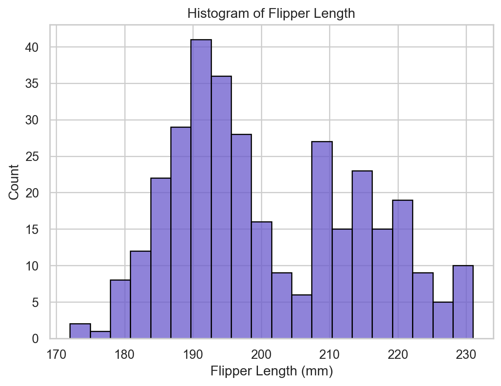
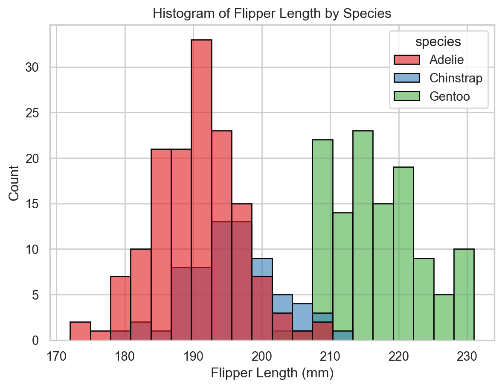
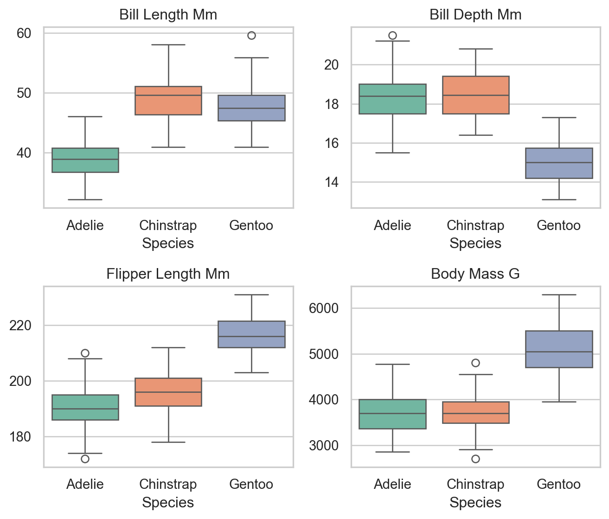
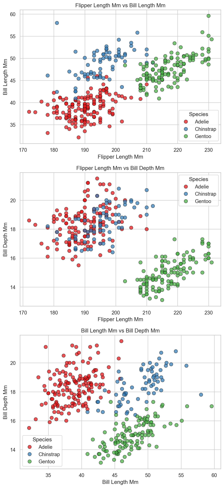
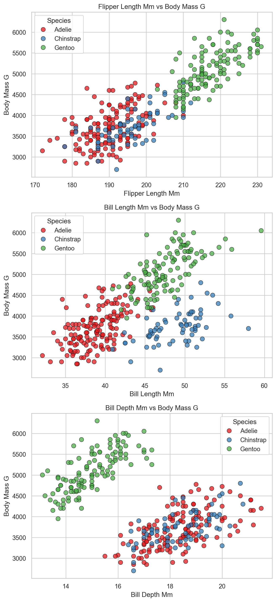
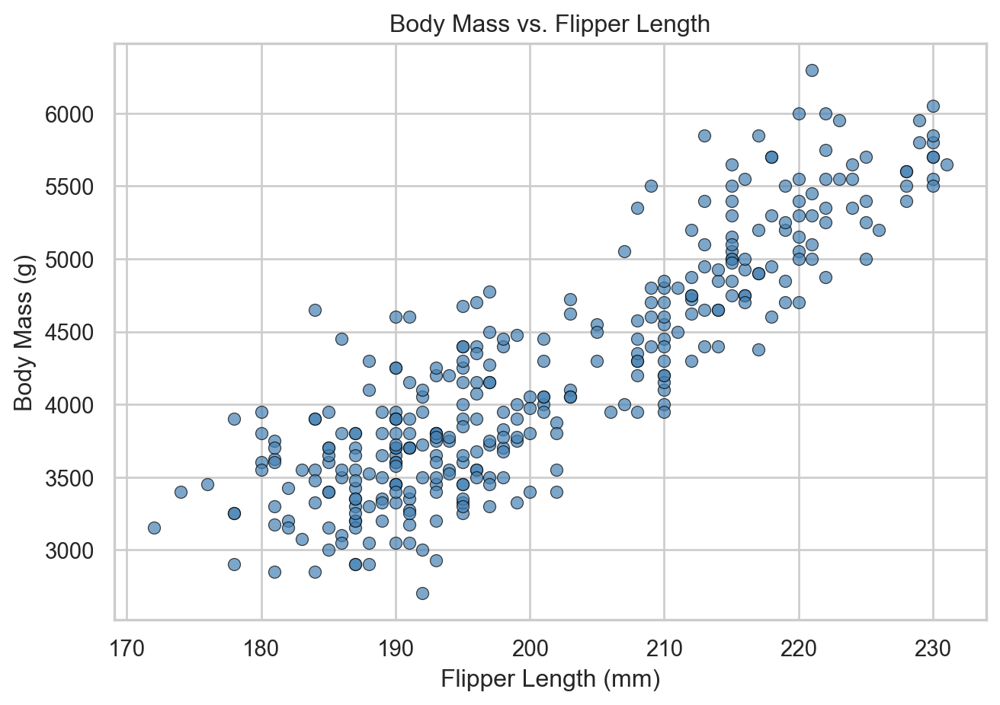
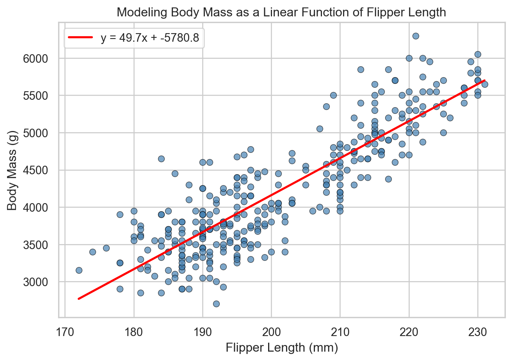

In this section, we begin by exploring the Palmer penguin dataset, which contains measurements from several species of penguins collected in Antarctica.
The Palmer penguin dataset contains characteristics or features for penguins representing three species — Adelie, Gentoo, and Chinstrap — collected from three islands in the Palmer Archipelago, Antarctica. It includes multiple physical measurements for each penguin, such as:
Flipper length (mm)
Bill length (mm)
Bill depth (mm)
Body mass (g)
The above measurements are called numerical features. The dataset also includes non-numerical features such as "species" and "island" that we call categorical features.
Together, these features — both numerical and categorical — describe each individual penguin in the dataset. They allow us to compare penguins, detect patterns, and make predictions.
To start working with the penguin dataset in table form, we will use the Python package pandas, which is widely used in data science.
In pandas, a dataset is stored as a data frame — a table of data where:
Each row of the data frame contains the features for a particular penguin.
Each column of the data frame contains the values of a particular feature — such as flipper length or body mass — across all penguins.
Here is some code that loads in the dataset as the data frame penguins_raw and prints out the number of penguins, the number of features, and the name of each feature:
Code
import pandas as pd# Load the dataset from Seaborn's GitHub repositoryurl ="https://raw.githubusercontent.com/mwaskom/seaborn-data/master/penguins.csv"penguins_raw = pd.read_csv(url)# Print number of samples (rows) and features (columns)rows, cols = penguins_raw.shapeprint("Number of penguins:", rows)print("Number of features:", cols)print("All features in the dataset:")print(list(penguins_raw.columns))
Number of penguins: 344
Number of features: 7
All features in the dataset:
['species', 'island', 'bill_length_mm', 'bill_depth_mm', 'flipper_length_mm', 'body_mass_g', 'sex']
Cleaning and Filtering Data
Real-world data is often messy. In this case, some rows are missing values — for example, a penguin might have been weighed but not measured. To keep things simple for now, we’ll remove any rows that contain missing values and put the result in the new data frame penguins_clean.
Code
penguins_clean = penguins_raw.dropna()print("Number of penguins (after data cleaning):",len(penguins_clean))
Number of penguins (after data cleaning): 333
For now we will focus on five features that describe the shape and size of each penguin and its species:
Bill length
Bill depth
Flipper length
Body mass
Species
We’ll store these features in a new data frame called penguins and print the first few rows to get a sense of what we’re working with.
Code
# Keep only the features we want to focus onfeature_columns = ["bill_length_mm", "bill_depth_mm", "flipper_length_mm", "body_mass_g", "species"]penguins = penguins_clean[feature_columns]# Print the first few rows our datasetprint(penguins.head())
Python uses 0-based indexing, which means counting starts at 0, not 1.
For example, the first penguin in the table has index \(0\), the second penguin has index \(1\), and so on.
Accessing Table Entries
Single entries of the pandas data frame penguins give us the value of a specific feature for one of the penguins.
To access a single entry in the table:
Select the feature (e.g., "flipper_length_mm")
Select the penguin by its index (starting from 0)
For example, the code below prints the flipper length of the first penguin.
Code
flipper_length_0 = penguins["flipper_length_mm"].iloc[0]print("Flipper length of the first penguin:", flipper_length_0, "mm")
Flipper length of the first penguin: 181.0 mm
Here’s a breakdown of what penguins["flipper_length_mm"].iloc[0] means:
penguins["flipper_length_mm"] gives us the entire column of flipper lengths. In pandas, this column is called a Series — a one-dimensional object with one value per penguin.
.iloc[0] selects the first entry in that Series — in this case, the flipper length of the first penguin.
Now that we know how to access individual entries in the dataset, let’s compute an average.
Exercise: Compute the average bill depth of the first 3 penguins in the dataset. Use round(..., 1) to round the average to one decimal place.
Show Solution
We’ll extract the first three values from the "bill_depth_mm" column, then compute their average:
Code
d0 = penguins["bill_depth_mm"].iloc[0]d1 = penguins["bill_depth_mm"].iloc[1]d2 = penguins["bill_depth_mm"].iloc[2]average_depth =round((d0 + d1 + d2) /3, 1)print("Average bill depth of first 3 penguins:", average_depth, "mm")
Average bill depth of first 3 penguins: 18.0 mm
Summary Statistics
So far we’ve worked with individual entries in a data frame — like the bill depth of the first penguin.
Sometimes we want to compute across an entire feature. For example, to find the average body mass across all penguins, we need the body mass for every penguin — not just one.
Numerical Features
We can use built-in pandas methods like .mean(), .median(), .std(), .min(), and .max() to compute summary statistics for a single feature stored as a pandas series.
Code
body_mass = penguins["body_mass_g"]print("Average body mass:", round(body_mass.mean(), 1), "g")print("Standard deviation of body mass:", round(body_mass.std(), 1), "g")print("Median body mass:", body_mass.median(), "g")print("Minimum body mass:", body_mass.min(), "g")print("Maximum body mass:", body_mass.max(), "g")
Average body mass: 4207.1 g
Standard deviation of body mass: 805.2 g
Median body mass: 4050.0 g
Minimum body mass: 2700.0 g
Maximum body mass: 6300.0 g
Exercise: Print the average, median, standard deviation, minimum, and maximum of the bill length feature.
Show Solution
Code
bill_length = penguins["bill_length_mm"]print("Average bill length:", round(bill_length.mean(), 1), "mm")print("Median bill length:", bill_length.median(), "mm")print("Standard deviation of bill length:", round(bill_length.std(), 1), "mm")print("Minimum bill length:", bill_length.min(), "mm")print("Maximum bill length:", bill_length.max(), "mm")
Average bill length: 44.0 mm
Median bill length: 44.5 mm
Standard deviation of bill length: 5.5 mm
Minimum bill length: 32.1 mm
Maximum bill length: 59.6 mm
In addition to functions like .max() and .min(), which return the largest or smallest value in a pandas series, there are also functions that tell us where those values occur.
For example: - .idxmax() returns the row of the maximum value in a series. - .idxmin() returns the row of the minimum value in a series.
These are useful when we want to identify, for example, which penguin has the longest bill or the shortest flippers.
Code
# Find the row of the penguin with the longest billlongest_bill_row = penguins["bill_length_mm"].idxmax()print("Row of penguin with longest bill:", longest_bill_row)
Row of penguin with longest bill: 253
We can then extract the full row — that is, all features for that penguin:
Code
longest_bill_features = penguins.loc[longest_bill_row]print("Features of the penguin with the longest bill:")print(longest_bill_features)
Features of the penguin with the longest bill:
bill_length_mm 59.6
bill_depth_mm 17.0
flipper_length_mm 230.0
body_mass_g 6050.0
species Gentoo
Name: 253, dtype: object
Exercise: Find the penguin with the shortest flippers. Then extract and print the full row of features for that penguin.
Show Solution
Code
# Find the row of the penguin with the shortest flippersshortest_flippers_row = penguins["flipper_length_mm"].idxmin()print("Row of penguin with shortest flippers:",shortest_flippers_row)# Extract and print the rowshortest_flippers_features = penguins.loc[shortest_flippers_row]print("Features of the penguin with the shortest flippers:")print(shortest_flippers_features)
Row of penguin with shortest flippers: 28
Features of the penguin with the shortest flippers:
bill_length_mm 37.9
bill_depth_mm 18.6
flipper_length_mm 172.0
body_mass_g 3150.0
species Adelie
Name: 28, dtype: object
Categorical Features
So far we’ve focused on numerical features like flipper length and body mass. But not all features are numbers — some describe categories like species or island.
To summarize a categorical feature, we often want to count how many times each category appears. The .value_counts() function does exactly that.
For example, to count the number of penguins in each species:
Code
species_counts = penguins["species"].value_counts()print("Number of penguins in each species:")print(species_counts)
Number of penguins in each species:
species
Adelie 146
Gentoo 119
Chinstrap 68
Name: count, dtype: int64
Exercise: How many penguins are there from each island? How many of each sex are there? Note: To complete this exercise, you will need to use the penguins_clean data frame, which contains all of the original features.
Show Solution
Code
# Count by islandisland_counts = penguins_clean["island"].value_counts()print("Number of penguins from each island:")print(island_counts)# Add a newlineprint()# Count by sexsex_counts = penguins_clean["sex"].value_counts()print("Number of penguins of each sex:")print(sex_counts)
Number of penguins from each island:
island
Biscoe 163
Dream 123
Torgersen 47
Name: count, dtype: int64
Number of penguins of each sex:
sex
MALE 168
FEMALE 165
Name: count, dtype: int64
Visualization
So far we’ve used summary statistics like .mean() and .std() to describe each feature. But sometimes it’s easier to understand the structure of a dataset by looking at it.
In this section, we use plots to explore the distribution of individual features and to see how those features vary across species.
Histograms and Box Plots
Let’s start by visualizing a single numerical feature: flipper length.
This histogram shows how flipper length is distributed across all penguins in the dataset.
Code
import matplotlib.pyplot as pltimport seaborn as snssns.set_theme(style="whitegrid")plt.figure(figsize=(7, 5))sns.histplot(data=penguins, x="flipper_length_mm", bins=20, color="slateblue", edgecolor="black")plt.title("Histogram of Flipper Length")plt.xlabel("Flipper Length (mm)")plt.ylabel("Count")plt.show()

This plot shows the overall shape of the data — but it doesn’t tell us how flipper length varies by species.
Now let’s improve the plot by color-coding the data by species and overlaying the histograms. This helps us see how much the species overlap in flipper length.
Code
plt.figure(figsize=(7, 5))sns.histplot( data=penguins, x="flipper_length_mm", hue="species", bins=20, multiple="layer", palette="Set1", edgecolor="black", alpha=0.6)plt.title("Histogram of Flipper Length by Species")plt.xlabel("Flipper Length (mm)")plt.ylabel("Count")plt.show()

From this version of the plot, we can see that:
Gentoo penguins tend to have the longest flippers.
Adelie and Chinstrap penguins are more similar, with a lot of overlap.
This suggests that flipper length can help distinguish species — especially Gentoo — but it’s not enough to fully separate the data on its own.
Next, we’ll use box plots for each of the four numerical features to compare the distributions more precisely across species. This will help us see whether any single feature fully separates the data.
Code
plt.figure(figsize=(7, 6))# Define the list of numerical featuresfeatures = ["bill_length_mm", "bill_depth_mm", "flipper_length_mm", "body_mass_g"]# Create a 2x2 grid of box plotsfor i, feature inenumerate(features): plt.subplot(2, 2, i +1) sns.boxplot(data=penguins, x="species", y=feature, hue="species", palette="Set2", legend=False) plt.title(f"{feature.replace('_', ' ').title()}") plt.xlabel("Species") plt.ylabel(None)plt.tight_layout()plt.show()

The box plots show that some features — like flipper length — are better than others at distinguishing species, and that no feature fully separates the data on its own.
Scatter Plots and Clustering
Previously, we saw that no single feature — like flipper length or bill depth — is enough to fully separate the three penguin species. But what happens when we look at two features at once?
By using a scatter plot where each axis represents a different feature, we can see how penguins cluster in two-dimensional space, and whether certain combinations of features help distinguish the species more clearly.
The scatter plots below show three such combinations:
Flipper length vs. Bill length
Flipper length vs. Bill depth
Bill length vs. Bill depth
Each point represents a penguin and its color indicates the species.
Code
# Define the feature pairsfeature_pairs = [ ("flipper_length_mm", "bill_length_mm"), ("flipper_length_mm", "bill_depth_mm"), ("bill_length_mm", "bill_depth_mm")]# Set up a 3-row, 1-column layoutfig, axes = plt.subplots(3, 1, figsize=(7, 15))# Loop through the feature pairsfor ax, (x_feature, y_feature) inzip(axes, feature_pairs): sns.scatterplot( data=penguins, x=x_feature, y=y_feature, hue="species", palette="Set1", edgecolor="black", alpha=0.75, s=60, ax=ax ) ax.set_xlabel(x_feature.replace('_', ' ').title()) ax.set_ylabel(y_feature.replace('_', ' ').title()) ax.set_title(f"{x_feature.replace('_', ' ').title()} vs {y_feature.replace('_', ' ').title()}") ax.legend(title="Species")plt.tight_layout()plt.show()

These scatter plots show that two of the three feature pairs result in clear species separation into clusters.
A cluster is a group of data points that are close together in a plot and share similar characteristics. In this context, each cluster tends to contain penguins from the same species.
If two species form well-separated clusters in a scatter plot, it means those two species are easy to distinguish using just those two features.
Exercise: Using scatter plots, compare body mass against each of: flipper length, bill length, and bill depth. Which pair(s) give a clean separation of the data into species clusters? Do any pair of features look like they are linearly related?
Show Solution
As we see below, only bill length vs body mass results in a strong visual separation between the species.
Also, flipper length and body mass appear to be linearly related —– the points fall roughly along a straight line. As flipper length increases, body mass increases in a steady, consistent way.
Code
# Define the feature pairsfeature_pairs = [ ("flipper_length_mm","body_mass_g"), ("bill_length_mm","body_mass_g"), ("bill_depth_mm","body_mass_g")]# Set up a 3-row, 1-column layoutfig, axes = plt.subplots(3, 1, figsize=(7, 15))# Loop through the feature pairsfor ax, (x_feature, y_feature) inzip(axes, feature_pairs): sns.scatterplot( data=penguins, x=x_feature, y=y_feature, hue="species", palette="Set1", edgecolor="black", alpha=0.75, s=60, ax=ax ) ax.set_xlabel(x_feature.replace('_', ' ').title()) ax.set_ylabel(y_feature.replace('_', ' ').title()) ax.set_title(f"{x_feature.replace('_', ' ').title()} vs {y_feature.replace('_', ' ').title()}") ax.legend(title="Species")plt.tight_layout()plt.show()

Interactive 3D Scatter Plots
We can visualize all five features at the same time by using:
3D position for: flipper length, bill length, and bill depth
Point size to represent: body mass
Point color to indicate: species
This interactive plot lets you explore the full structure of the data:
Use your mouse to zoom, rotate, and pan the view.
Hover over points to see the values for individual penguins.
Try to find a viewpoint where the species clusters are most clearly separated.
Code
import plotly.express as px# Shift and rescale body mass to use it as a point sizebody_mass = penguins["body_mass_g"]penguins_new = penguins.copy()penguins_new["body_mass_scaled"] =round((body_mass -2700) /100, 1) +1# Create a 3D scatter plot using 4 featuresfig = px.scatter_3d( penguins_new, x="flipper_length_mm", y="bill_length_mm", z="bill_depth_mm", color="species", size="body_mass_scaled", title="Scatter Plot in 3D with Body Mass as Point Size", labels={"flipper_length_mm": "Flipper Length (mm)","bill_length_mm": "Bill Length (mm)","bill_depth_mm": "Bill Depth (mm)","body_mass_scaled": "Body Mass (scaled)" })fig.show()
Prediction and Vectors
Let’s again consider a scatter plot of flipper length vs. body mass.
Code
# Create the scatter plot with a single colorplt.figure(figsize=(7, 5))sns.scatterplot( data=penguins, x="flipper_length_mm", y="body_mass_g", color="steelblue", # Single color edgecolor="black", alpha=0.7)plt.title("Body Mass vs. Flipper Length")plt.xlabel("Flipper Length (mm)")plt.ylabel("Body Mass (g)")plt.tight_layout()plt.show()

These two features appear to be linearly related —– the points fall roughly along a straight line. As flipper length increases, body mass increases in a steady, consistent way.
This suggests that body mass could be roughly predicted from flipper length.
In order to make predictions, we need to first fit a line to the data.
A straight line has the general form:
\[
y = \beta x + v
\]
where:
\(x\) is the input feature (in this case, flipper length),
\(y\) is the predicted output (in this case, body mass),
\(\beta\) is the slope of the line,
\(v\) is the intercept — the value of \(y\) when \(x = 0\).
For this feature pair, let’s try using the line:
\[
y = 49.7 x - 5780.8
\]
Let’s first see how well the line fits the data visually:
Code
import matplotlib.pyplot as pltimport seaborn as sns# Known slope and interceptbeta =49.7v =-5780.8# Define the x range using min and max of the actual datax = penguins["flipper_length_mm"]y = penguins["body_mass_g"]x0 = x.min()x1 = x.max()y0 = beta * x0 + vy1 = beta * x1 + v# Create scatter plot and add the line using two pointsplt.figure(figsize=(7, 5))sns.scatterplot(x=x, y=y, color="steelblue", edgecolor="black", alpha=0.7)plt.plot([x0, x1], [y0, y1], color="red", linewidth=2, label=f"y = {beta}x + {v}")plt.xlabel("Flipper Length (mm)")plt.ylabel("Body Mass (g)")plt.title("Modeling Body Mass as a Linear Function of Flipper Length")plt.legend()plt.tight_layout()plt.show()

Remaining Topics
This final part of Chapter 1 builds toward the least squares derivation for fitting a line using the math of vectors, orthogonality, and projections.
Pose the Central Questions
How do we measure how well a line fits the data?
Given a way to measure fit, how do we find the best line?
Both questions require us to understand and operate on vectors.
Introduce Vectors Formally
Define a vector as a list of numbers — one per penguin.
Define basic vector operations:
Scalar multiplication
Vector addition
Linear combinations
Express the predicted body mass vector as the linear combination:
\[
\mathbf{\hat{y}} = \beta \mathbf{x} + v \mathbf{1}
\]
Show how to compute this feature in Python using broadcasting (without NumPy).
Measuring Fit Using Vector Distance
Define the error vector: \(\mathbf{e} = \mathbf{y} - \mathbf{\hat{y}}\) -Define:
Vector length (norm),
Difference vectors, and
Distance between vectors using squared error
This gives us a numerical measure of how good the fit is.
The Goal: Least Squares Line
Define the least squares line as the one that minimizes the squared error between predicted and actual body mass.
Emphasize: we’re looking for \(\beta\) and \(v\) that minimize:
\[
\|\mathbf{y} - (\beta \mathbf{x} + v)\|^2
\]
Geometric Insight
Draw a cartoon in \(\mathbb{R}^2\) (or \(\mathbb{R}^{333}\) abstractly).
Show:
Actual feature vector \(\mathbf{y}\)
Approximate vector \(\hat{\mathbf{y}}\) (not lying on line in the \(\mathbf{y}\) direction)
Error vector \(\mathbf{e}\)
Argue: To minimize error, \(\mathbf{e}\) must be orthogonal to the line in the direction of \(\mathbf{y}\).
Orthogonality and the Dot Product
Recall the Pythagorean theorem and use it to motivate the dot product .. vectors are orthogonal if and only if \(x_1 y_1 + ...+ x_n y_n = 0\)